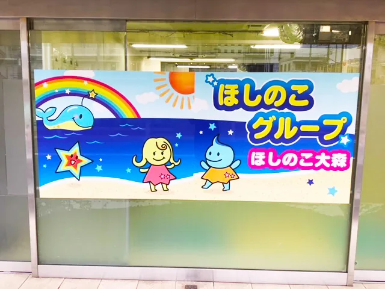
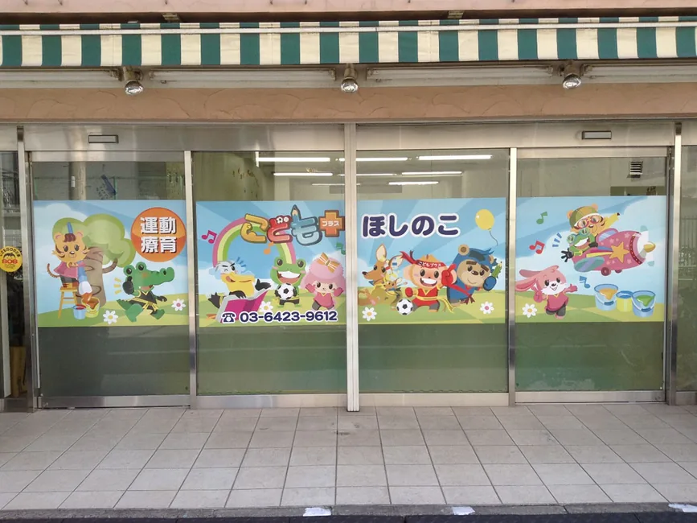
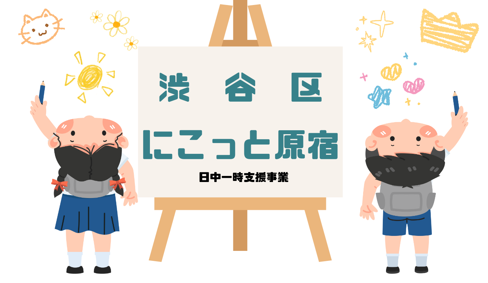

東京都指定放課後等デイサービス・東京都指定児童発達支援ほしのこ大森
- 対象
- 主に小学生、未就学児
- 所在地
- 東京都大田区大森南
- 電話番号
- 03-6423-9612
東京・千葉・神奈川で、子どもとご家族の毎日を支える
スターフィールドは、保育園・児童発達支援・放課後等デイサービス・居宅介護・移動支援・日中一時支援を通じて、子どもたちとご家族の毎日を支えています。
STAR FIELD
施設情報・公表資料・相談先を探しやすく保護者、利用者、役所・関係機関の方が必要な情報へ進みやすい構成です。About
経営理念「子どもの笑顔は未来をつなぐ」を軸に、子どもたちの笑顔・生きる力・生きる権利を大切にしています。
保護者、地域、関係機関と連携し、一人ひとりの発達や生活に寄り添った支援を行います。
私たちについて詳しく見るFacilities
保育園、児童デイサービス、日中一時支援、居宅介護・移動支援から、目的に合う施設へ進めます。
ほしのこ保育園、ほくほく保育園、ほしのこキッズルーム
Day service児童発達支援・放課後等デイサービスの各事業所
Temporary support渋谷区にこっと原宿
Home supportスターサポート「てくてく」
Pickup

東京都指定放課後等デイサービス・東京都指定児童発達支援
千葉市認可保育園
渋谷区障がい児保育型日中一時支援事業Support
対象や利用条件はサービス・施設により異なります。制度に関わる内容は、各施設または本部へご相談ください。
Flow
受給者証など制度に関わる内容はサービスにより異なります。必要なお手続きは個別にご案内します。
気になる施設や支援内容についてご相談ください。
施設の雰囲気やお子さまの状況を確認します。
利用に必要な手続きや確認事項をご案内します。
利用内容を確認し、契約を行います。
ご家庭と連携しながら支援を始めます。
Data
運営施設数
旧サイト掲載施設から算出対応エリア
東京・千葉・神奈川サービス種別
保育・児童支援・生活支援など従業員数
旧サイト会社概要よりPublic offices
法人情報、事業所一覧、公表資料、各施設の連絡先をまとめて確認できます。照会や資料確認が必要な場合は本部窓口へお問い合わせください。
News
Services
スター・フィールドは、保育と障がい児支援、生活・外出支援を組み合わせ、子どもたちとご家族の毎日に寄り添っています。
FAQ / Disclosure
見学、受給者証、利用料金、送迎、公表資料など、初めて確認したい情報へ進みやすい導線を用意しています。
Contact
対象や利用条件はサービス・施設により異なります。分かる範囲から丁寧にご案内します。